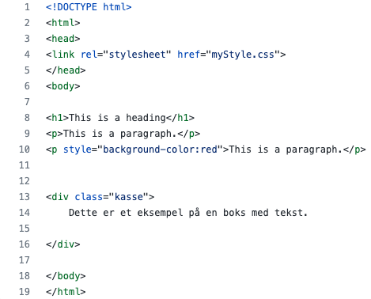

Intil videre i vores informatik forløb har vi lært de helt basale informationer om, hvordan man laver en hjemmeside og, hvilke koder du skal bruge til at bygge en hjemmesider op. Jeg vil på denne side vise og forklare, hvilke koder jeg har brugt til at lave min hjemmeside og, hvad de forskellige koder betyder.
Jeg har sat et konkret stykke af koder ind, som er det basale der får hele min side til at fungere. Billedet nedunder den her tekst er de koder.
Billedet ovenover har jeg brugt til at skabe hjemmesidens grundlæggende funktioner. Jeg har ændret nogle af tingene i koden så det passsede til min side og det layout jeg ønskede.
Jeg har lavet hjemmesidens baggrundsfarve inde på en side i Brackets som heder mystyle.css. Billedet nedenunder viser, hvordan jeg har brugt mystyle til at style min side.